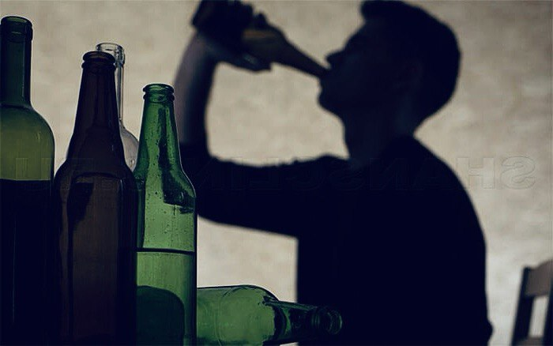

+380(97) 369 76
65
+380(97) 369 76
65Лечение пивного алкоголизма Киев
Пивной алкоголизм - чума двадцать первого века.
Работаем в Одессе, Киеве, Львове, Харькове, Днепре, Запорожье, Черноморске, Каменском


Бесплатная консультация, работаем круглосуточно 24/7
Пивной алкоголизм - чума двадцать первого века.
Работаем в Одессе, Киеве, Львове, Харькове, Днепре, Запорожье, Черноморске, Каменском
Пивной алкоголизм - это болезнь вызванная чрезмерным употреблением пива и является разновидностью алкогольной зависимости. Характеризуется патологическим ежедневным употреблением пива , постепенной утратой количественного объема выпитого за день и приводящая к серьезным хроническим заболеванием.
Пивной алкоголизм всегда характеризуется такими симптомами:
Пивной алкоголизм имеет три стадии:
Продолжительность стадий пивного алкоголизма могут быть разные. Путь формирования зависимости может достигать от двух до двадцати лет.
Пивной алкоголик - это человек убежденный в том что пиво не относится к серьезным алкогольным напиткам и его употребление допустимо на ежедневной основе. Пивной алкоголизм отличается от других форм алкоголизма тем что развивается намного медленней и является менее проблематичным и заметным для окружающих. Пивной алкоголик убежден в том что пиво не несет каких либо серьезных последствий для его организма и является вполне безопасным напитком. Часто больной и его родственники не видят проблемы в чрезмерном ежедневном употреблении пива , ведь больной может оправдывать свою зависимость тем что он расслабляется после тяжелого рабочего дня.
Лечение пивного алкоголизма проходит в четыре этапа.
Помните что лечение пивного алкоголизма должно быть комплексным и включать в себя все четыре этапа для достижения полного выздоровления.
Стоимость лечение пивного алкоголизма в Киеве начинается от 1699грн.
Другие услуги наркологической службы UmbrellaPlus Киев:
| Услуга | Цена |
|---|---|
| Лечение алкоголизма Киев | От 1699 грн |
| Вывод из запоя Киев | От 1699 грн |
| Вывод из запоя на дому Киев | От 1999 грн |
| Капельница от алкоголя Киев | От 1699 грн |
| Капельница от алкоголя на дому Киев | От 1999 грн |
| Лечение пивного алкоголизма Киев | От 1699 грн |
| Лечение женского алкоголизма Киев | От 1699 грн |
| Кодирование от алкоголизма Киев | От 4999 грн |
| Кодирование от алкоголизма уколом Дисульфирам | От 4999 грн |
| Кодирование от алкоголизма уколом Эспераль | От 6500 грн |
Что бы закодироваться от пивного алкоголизма в Киеве вам нужно позвонить по номеру 050-021-69-57.
Кодировка от пивного алкоголизма происходит в три этапа:
После кодировки, врач-нарколог дает рекомендации пациенту по дальнейшему соблюдению режима, а также по профилактике рецидивов. При надобности назначается таблетированное лечение.
Пивной алкоголизм является тяжелым психиатрическим заболеванием, но некоторые люди способны самостоятельно избавиться от пагубной привычки. Положительный прогноз наблюдается когда пациент самостоятельно осознает собственную проблему на начальных этапах и не допускает развития тяжелых последствий и полной деградации личности. Основа лечения заключается в признании зависимости и формировании стойкой ремиссии с мотивацией к избавлению от пивного алкоголизма. Так же стоит исключить любое употребление алкоголя в семье не только больным, но и его родственникам. Но стоит помнить что часто пациенты, вошедшее в ремиссию, занимаются самообманом и считают что взяли зависимость под контроль тем самым допускают употребление одной бутылочки пива что приводит к срыву, запойному состоянию и полной потере достигнутых результатов и возможной депрессии. Не занимайтесь самолечением и обращайтесь к проверенным наркологам Украины.
Анонимно

"Никакими усилиями самостоятельно я не смогла преодолеть запой, и наступала ломка, сопровождаемая повышенным давлением и пульсом. Тогда я решила обратиться за помощью в клинику. Врачи оказали мне неоценимую поддержку! Уже прошел месяц, и я не только не употребляю алкоголь, но даже не испытываю к нему желания!"
Анонимно
"Могу с уверенностью порекомендовать данный центр для тех, кто ищет помощь при выводе из запоя. Я неоднократно обращался к ним и могу сказать, что цена соответствует качеству услуг. После проведения капельницы в клинике, вся тяга к алкоголю проходит, и я чувствую себя гораздо лучше. Это действительно эффективный метод, и я благодарен клинике за их профессионализм и заботу!"
Анонимно
"Я очень благодарен за то, что вы помогли мне разобраться с моей проблемой алкоголизма и найти ее решение. Давно осознавал, что без помощи профессионалов я не справлюсь, и я не ошибся, выбрав ваш центр Амбрелла. Здесь действительно предоставляется профессиональная помощь, которая оказалась для меня реальным спасением. Огромное спасибо за вашу поддержку и заботу!"
Анонимно
"Неоднократно я пытался бросить алкоголь самостоятельно, но каждый раз уговаривал себя продолжать. Я сначала ограничивался одной бутылкой в день, потом двумя, и в итоге вновь попадал в запой. Но в итоге, я смог прекратить употребление алкоголя только после того, как обратился в центр Амбрелла и заказал у них услугу вывода из запоя. Уже не пью 3 месяца и удалось полностью восстановиться. Благодарю врача который меня вел - Алексея Валерьевича"
Анонимно
"Здравствуйте! Я хотел бы выразить свою искреннюю благодарность клинике за быстрое и профессиональное освобождение моего мужа пивного рабства! Ранее у меня уже не было никаких надежд на его выздоровление. Однако, благодаря вашим перспективным методам лечения, мы теперь идем к полному отказу от алкоголя. Вы дали нам новую надежду и оказали неоценимую помощь! Спасибо вам за все!"
Анонимно
"Я долгое время страдал от запоев и не мог справиться с этой проблемой. Однако, когда я обратился в этот центр, они быстро помогли мне вернуться на ноги, и самое главное - предоставили мне возможность не возвращаться к запоям. Уже почти полгода я не испытываю запоев! Это для меня настоящее чудо, я никогда не думал, что смогу так преодолеть свои проблемы. Большое спасибо центру Амбрелла!"
Анонимно
"Благодарю ваш центр Амбрелла за оперативное и высококачественное лечение! Женский алкоголизм - это настоящее горе, с которым невозможно справиться в одиночку. Я уже потеряла надежду, но благодаря вашей помощи, она вернулась ко мне! Отдельная благодарность врачу Станиславу Вячеславовичу, а также благодарность Богу за то, что он послал мне такое чудо как ваша центр! Спасибо вам всем!"
Анонимно
"Хочу выразить благодарность врачу Владиславу Алексеевичу за то, что вы избавили меня от этого ужаса. Я уже был в отчаянии, перепробовал множество клиник и центров, но только здесь я наконец получил настоящую помощь! Алкоголь полностью разрушил меня, и если бы не ваша помощь, я, возможно, уже не был бы жив. С вами я смог вернуть себе жизнь и буду благодарен вам всегда!"
Приезд в течении 60 минут от момента поступления заявки
Наши филиалы есть во всех больших городах Украины.
Мы оказываем профессиональную доказательную медицинскую помощь. Гарантией является наше имя.
Номер телефона:
+380 (97) 369 76 65
+380 (50) 021 69 57
Адрес главного офиса: г. Харьков ул. Сумская 47
Офис вашего города нужно
уточнить
Работаем в: Одессе, Киеве, Львове, Харькове, Днепре,
Запорожье
Telegram: t.me/umbrellaplus
График работы: Круглосуточно